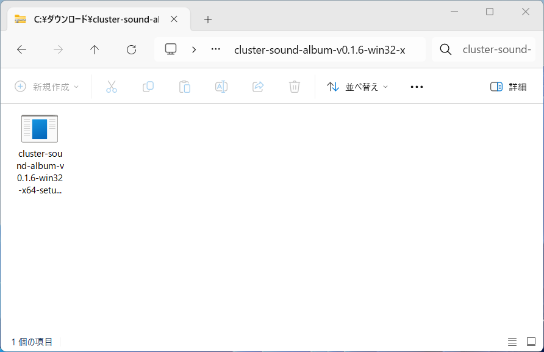
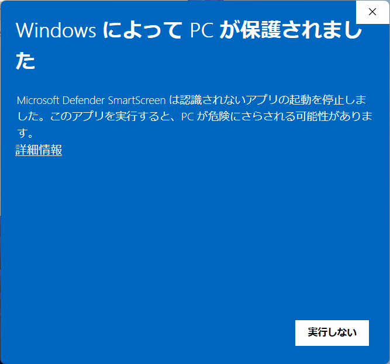
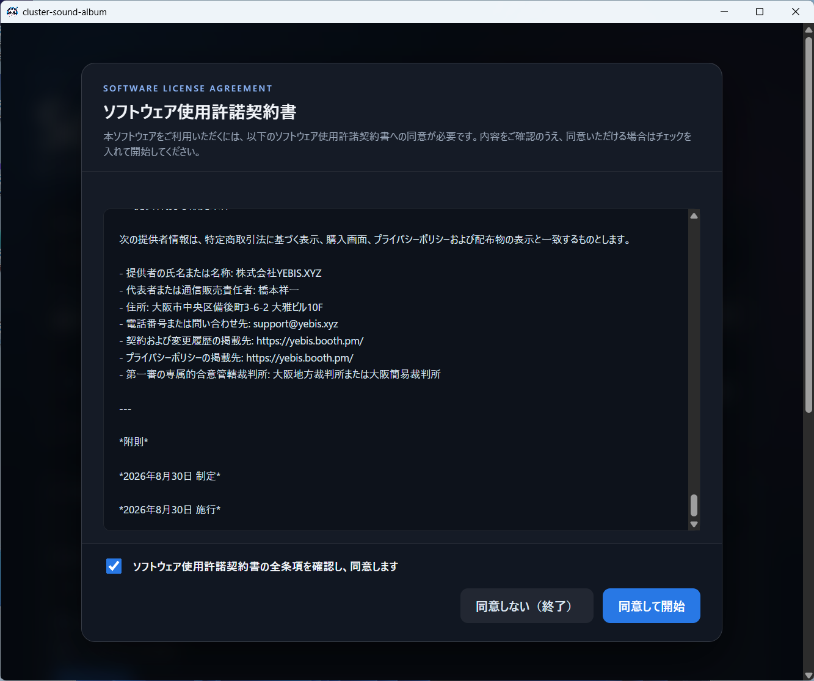
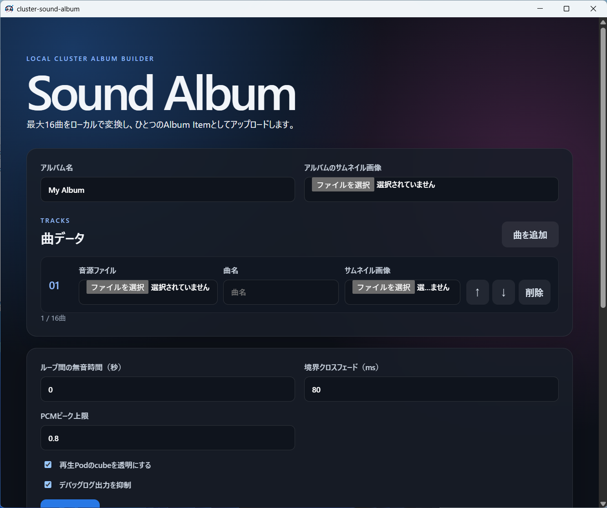

Installation Guide
cluster Sound Album
Windows版インストール手順書
対象：Windows
全10ステップ
ダウンロードしたセットアップファイルを実行し、アプリのインストールと初回起動時の利用規約への同意を行います。
1
セットアップファイルを開く
ダウンロードした cluster-sound-album-（バージョン）-win32-x64-setup-unsigned.exe をダブルクリックします。

ブラウザのダウンロード一覧からセットアップファイルを開きます。
2
警告の詳細を表示する
「WindowsによってPCが保護されました」と表示されたら、配布元を確認して「詳細情報」をクリックします。

「実行しない」ではなく、左側の「詳細情報」を選びます。
あと少しで準備完了です
使用許諾契約書へ同意すると、cluster Sound Albumのメイン画面が開きます。
9
使用許諾契約書に同意する
内容に同意できる場合はチェックボックスを選択し、「同意して開始」をクリックします。

同意しない場合はアプリを利用できません。
10
アプリの画面を確認する
「Sound Album」のメイン画面が表示されたら、インストールは完了です。

次回からはスタートメニューなどからcluster Sound Albumを起動できます。